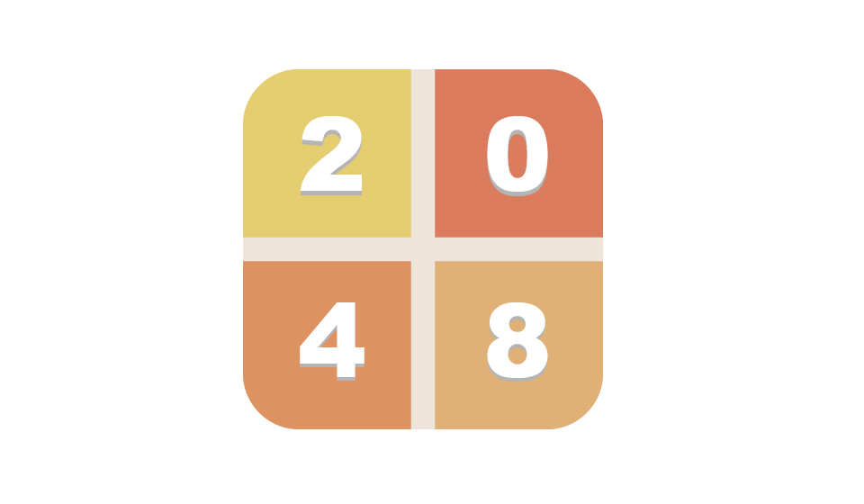

陈思昂，前端开发工程师，生于上海。12年毕业于苏州健雄学院，毕业后回到上海，从事专业相关工作。业余时间喜欢了解各种前沿科技， 工作两年后下定决心成为程序猿，15年初开始自学前端设计，目前累计学习与培训将近一年时间。首页有我的项目&作品，欢迎点击。
User Interface Design
Web网页页面设计
产品原型设计
Front-end Development
网站前端开发/响应式布局
Html5/CSS3/jQuery
User Experience Design
用户体验设计/前端框架
angularJs/BootStrap